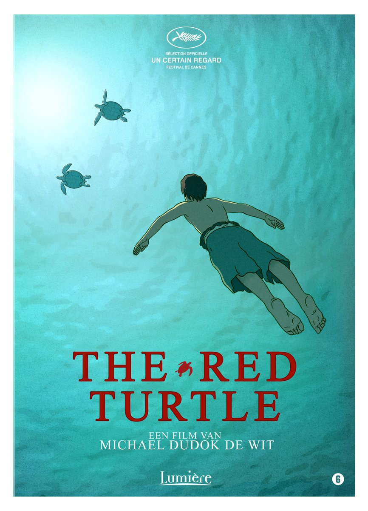

Iris Cedee
Fullstack Webdeveloper
I have a background in Picture-editing in 2018 I completed Le Wagon's Fullstack webdeveloper bootcamp.
Now I am improving my skills in Ruby, RubyonRails, ActionScript & JavaScript.
Other Skills: HTML/CSS, SEO, Photografie, Microsoft Excel, Databases and Image Libraries.
Interests: Art, Architecture,Photography, Landscape-design,Nature, Food & Lifestyle.
During the Le Wagon Bootcamp I have worked on the farm-dining RoR-project, with three other students for our final demo. I have worked both on back-end and front-end.
During the Le Wagon Bootcamp I have worked on the Needle in the Haystack RoR-project, with three other students. I have worked both on back-end and front-end. I will continue working on this project.
I have build the site for a young theater director.
I have build the site for a Dutch writer of Children's books.
 |
Le fabuleux destin d'Amélie Poulain Amélie is an innocent and naive girl in Paris with her own sense of justice. She decides to help those around her and, along the way, discovers love. |
 |
Into the wild After graduating from Emory University, top student and athlete Christopher McCandless abandons his possessions, gives his entire $24,000 savings account to charity and hitchhikes to Alaska to live in the wilderness. |
|  |
The Red Turtle A man is shipwrecked on a deserted island and encounters a red turtle, which changes his life. |